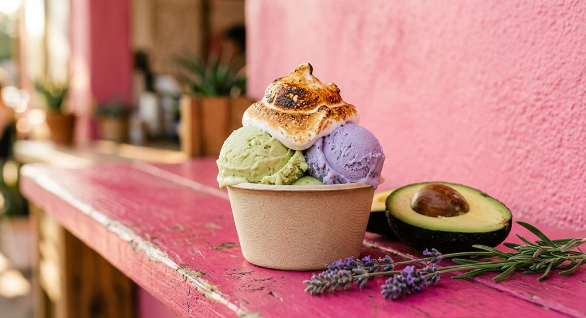
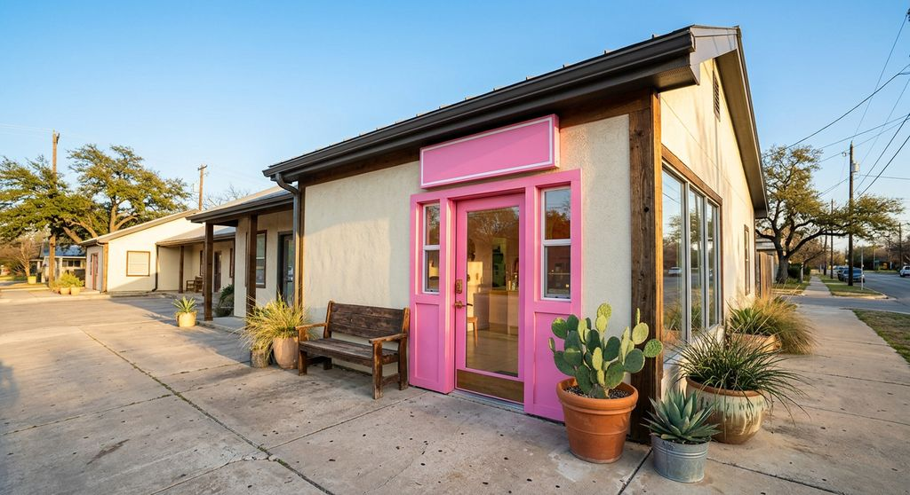

Vegan small-batch ice cream · Northeast Austin
All the luv.
None of the dairy.
Luv Fats churns dense, creamy ice cream from coconut milk and avocado, in rotating flavors often built on farmers-market produce. Find it at the pink shop on Loyola Lane.
Open Wednesday to Sunday, 1–8 pm

The base
Why it’s so creamy
Most dairy-free ice cream tastes icy, or just tastes of almond milk. Chi kept testing fats until the texture felt right.
Avocado
A good fat, and her mom’s favorite fruit. It makes the base smooth and rich.
Coconut milk
The body of every scoop, and a natural partner for avocado.
Cocoa butter + avocado oil
A little of each for that dense, slow-melting texture.
Whatever’s good
Herbs, fruit, spice and nuts, often from local farms and makers.
Flavor library
Lavender cookies & cream. Soy sauce pandan. Ube black sesame.
The case changes all the time. Browse 28 flavors Luv Fats has been known for, or let the matchmaker pick one for you.
- Lavender Cookies & Cream
- Lemon Cookie
- Sugarcane & Kumquat Sorbet
- Chocolate Chai
- Yerba Mate
- Vanilla Buckeye
- Mango Sorbet
- Caramel Rosemary

Visit
The pink shop on Loyola Lane
4700 Loyola Ln, Suite 101, Austin, TX 78723
Open Wednesday to Sunday, 1–8 pm
| Monday | Closed |
|---|---|
| Tuesday | Closed |
| Wednesday | 1 pm – 8 pm |
| Thursday | 1 pm – 8 pm |
| Friday | 1 pm – 8 pm |
| Saturday | 1 pm – 8 pm |
| Sunday | 1 pm – 8 pm |
Hours as of Oct 2026, per the shop’s Instagram. Holiday changes go up on Instagram first.
More ways to get Luv Fats
Pints
Take a pint home
Send a pint request and the shop confirms what’s churning and when to pick up.
Request pintsWholesale
Put it on your menu
Cafés, grocers and restaurants: ask about wholesale pints and tubs.
Wholesale enquiriesEvents
Scoops at your thing
Weddings, office parties, pop-ups. Tell us the date and headcount.
Event requestsThe luv letter
New flavors, before they hit the case.
An occasional email when something new is churning: a flavor drop, a holiday pint run, a pop-up. No spam, no daily blasts.